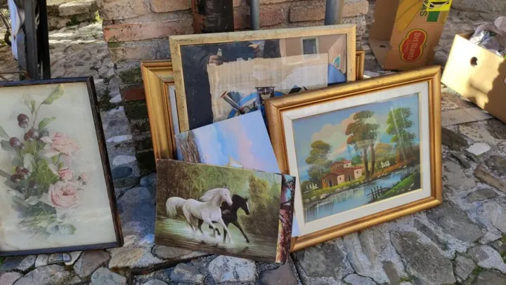

Friuli
dom 6 set · dalle 08:00
Mercatino delle pulci e del libro usato
Il tradizionale mercatino della prima domenica del mese nel centro storico di Gemona.
 Indicazioni
Indicazioni
- Costi e prenotazioni
- Ingresso libero · Nessuna prenotazione per i visitatori
- Programma
- Orario verificato. Apertura indicata alle 08:00 dalla pagina di Visit Gemona.
- In caso di maltempo
- Nessuna indicazione specifica pubblicata.
- Note
- Sono disponibili i servizi igienici dell’Ufficio Turistico.
L’EVENTO
Descrizione completa
Il mercatino mensile anima Via Bini e il centro storico di Gemona con oggetti usati, libri, artigianato e creazioni di hobbisti. È rivolto a espositori non professionali e operatori del proprio ingegno.
Sono disponibili i servizi igienici dell’Ufficio Turistico.
IL PROGRAMMA
Programma e orari
Appuntamenti raccolti dalle fonti elencate. Dove manca un orario, non è ancora disponibile in questa scheda.
Domenica 6 settembre
- 08:00 · Apertura del mercatino
- Bancarelle lungo Via Bini e nel centro storico
INFORMAZIONI UTILI
Prima di partire
- Sono disponibili i servizi igienici dell’Ufficio Turistico.
- Contatti: 346 164 7192 · mercatinopulcigemona@gmail.com
ORGANIZZAZIONE